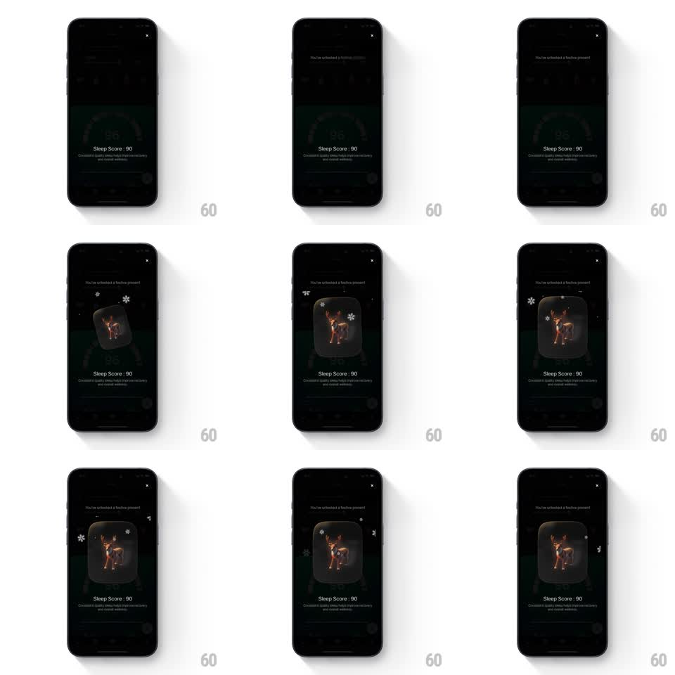

Media
Frame-by-frame

Rebuild this animation 1:1: Ultrahuman's festive unlock - a 3D reindeer card scales up out of the dark with snowflakes drifting around it while the "You've unlocked a festive present" message fades in.

Rebuild this animation 1:1: Ultrahuman's festive unlock - a 3D reindeer card scales up out of the dark with snowflakes drifting around it while the "You've unlocked a festive present" message fades in. ## Integration Integration: stack-agnostic spec - springs given as stiffness/damping, timed motions as duration + curve; map every value to your framework and animation library of choice. ## Scene Dark overlay over the dashboard: "You've unlocked a festive present" at top, close X, a rounded glass card holding a 3D reindeer, "Sleep Score: 90" + subcopy below. ## Motion spec Pattern: celebratory scale-in + ambient particles, ~1.2s in, ambient loop after. - Overlay fades in (250ms). - The card scales 0.5 -> 1 with a spring (~320/16, one gentle overshoot) while fading in; it arrives tilted ~-8deg and rights itself as it settles. - The reindeer inside has subtle idle motion (slow head bob, ~2s cycle). - Snowflake particles spawn around the card and drift downward with slight lateral sway (3-6s fall, varied sizes and opacity), looping indefinitely. - Title and copy fade in under the card (250ms, 150ms apart). ## Calibration - The overshoot is small (~4%); this is a gift, not a jackpot. - Snow falls behind and in front of the card (two depth layers) for parallax richness. ## Reduced motion Card fades in upright (250ms); no particles, no idle motion. ## Don't miss - The card rights itself exactly once - residual tilt reads as a layout bug. - Particles never cross the copy below; keep the text zone clear.